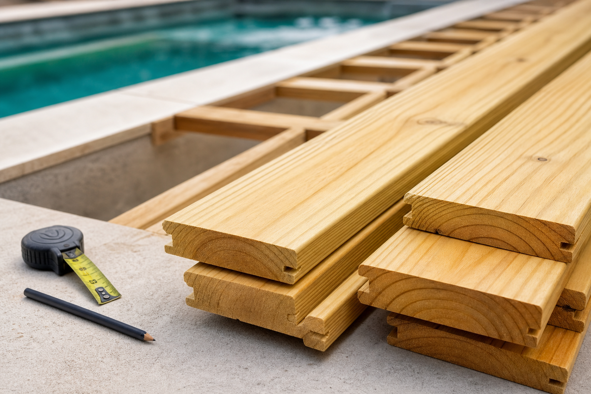
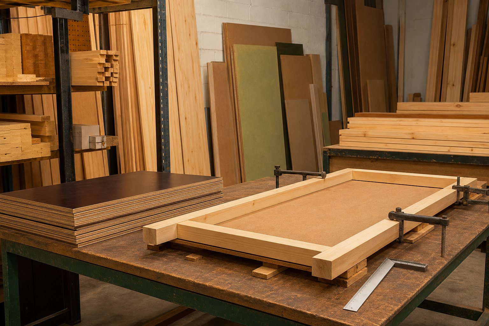

Madeiras para telhados e pergolados
Peças selecionadas para coberturas, áreas externas, varandas e estruturas aparentes.
Fornecimento de tábuas, barrotes, sarrafos, pranchas, madeirites, pinus autoclavado e peças sob medida para quem constrói com prazo, resistência e bom acabamento.
A TM Madeiras atende construtores, instaladores, arquitetos e clientes finais com peças para estrutura, acabamento e escoramento, incluindo opções em madeira agreste e pinus.
Consultar entregaPeças selecionadas para coberturas, áreas externas, varandas e estruturas aparentes.
Opções resistentes para construção, apoio, travamento e usos gerais na obra.
Madeira versátil para projetos internos, acabamentos, mobiliário simples e montagem.
Tratamento indicado para áreas externas, piscinas, jardins e espaços de convivência.
Montagem sob medida para concretagem, vigas, pilares e demandas de obra civil.
Praticidade para instalação com batentes, peças ajustadas e acabamento mais rápido.

Para piscina, área gourmet, jardim e pergolado, o pinus autoclavado entrega acabamento claro, encaixe preciso e boa resposta ao uso em ambientes externos.
A TM Madeiras apoia etapas práticas da construção com madeirites, compensados, fôrmas para concreto, estroncas para escoramento e kits porta-pronta montados com cuidado.

Solicite valores, disponibilidade e entrega para Aracaju, Nossa Senhora do Socorro, Barra dos Coqueiros e São Cristóvão.
Envie sua lista de peças, medidas ou foto do projeto. A equipe orienta a melhor opção para telhado, escoramento, deck, fôrmas, pergolado e kit porta-pronta.